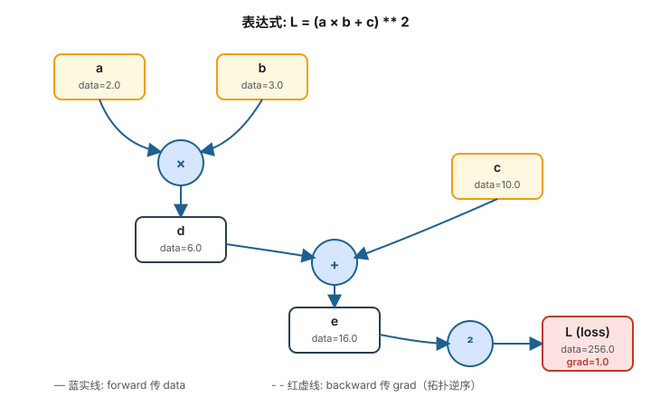
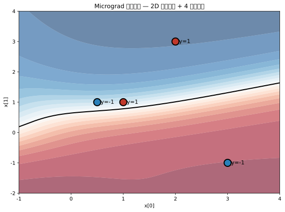

直接学 PyTorch 的根本问题：
| 维度 | 直接学 PyTorch | 先学 Micrograd |
|---|---|---|
loss.backward() 是什么 | 黑魔法 | 知道每一步在算什么 |
| 梯度从哪来 | "框架自动算" | 自己写了 _backward 方法 |
为什么要 zero_grad | 跟着套路写 | 知道梯度会累加 |
| 调试训练 bug | 不知道哪里坏 | 看得见整个计算图 |
| 后面学 Transformer | 黑盒套黑盒 | 透明，只是 scale up |
以表达式 L = (a × b + c) ** 2 为例，Micrograd 在背后构建的计算图如下：

核心机制：
data、grad、_prev（孩子）、_backward（如何把自己的 grad 传给孩子）_backward()Micrograd 阶段几乎没有"模型超参数"，但训练 MLP 时有几个：
| 参数 | 取值 | 含义 |
|---|---|---|
nin | 3 | 输入特征数（2D 点 + bias） |
| 隐藏层大小 | [4, 4] | 两个 4 神经元的隐藏层 |
nout | 1 | 输出 1 个值（二分类） |
lr | 0.05 ~ 0.1 | 学习率 |
| 训练步数 | 20 ~ 100 | 因为是全量梯度，步数不需要多 |
参数量：3×4 + 4 + 4×4 + 4 + 4×1 + 1 = 41 个标量参数
class Value:
def __init__(self, data, _children=(), _op=''):
self.data = data
self.grad = 0.0
self._backward = lambda: None # 默认什么都不做
self._prev = set(_children) # 用于拓扑排序
self._op = _op # 调试用
def __add__(self, other):
out = Value(self.data + other.data, (self, other), '+')
def _backward():
self.grad += 1.0 * out.grad # ∂out/∂self = 1
other.grad += 1.0 * out.grad # ∂out/∂other = 1
out._backward = _backward
return out
def __mul__(self, other):
out = Value(self.data * other.data, (self, other), '*')
def _backward():
self.grad += other.data * out.grad # ∂out/∂self = other
other.grad += self.data * out.grad # ∂out/∂other = self
out._backward = _backward
return out
def tanh(self):
t = (math.exp(2*self.data) - 1) / (math.exp(2*self.data) + 1)
out = Value(t, (self,), 'tanh')
def _backward():
self.grad += (1 - t**2) * out.grad # ∂tanh/∂x = 1-tanh²
out._backward = _backward
return out最关键的洞察：_backward 是一个闭包，它捕获了 self、other、out 三个对象的引用，所以反向传播时知道把梯度往哪里加。
def backward(self):
topo = []
visited = set()
def build_topo(v):
if v not in visited:
visited.add(v)
for child in v._prev:
build_topo(child)
topo.append(v)
build_topo(self)
self.grad = 1.0 # 起点：dL/dL = 1
for node in reversed(topo): # 逆向遍历
node._backward()要点：必须拓扑排序，否则可能在父节点 grad 还没算完之前就用它去更新子节点。
class Neuron:
def __init__(self, nin):
self.w = [Value(random.uniform(-1, 1)) for _ in range(nin)]
self.b = Value(0)
def __call__(self, x):
act = sum((wi*xi for wi, xi in zip(self.w, x)), self.b)
return act.tanh()
def parameters(self):
return self.w + [self.b]
class Layer:
def __init__(self, nin, nout):
self.neurons = [Neuron(nin) for _ in range(nout)]
def __call__(self, x):
return [n(x) for n in self.neurons]
def parameters(self):
return [p for n in self.neurons for p in n.parameters()]
class MLP:
def __init__(self, nin, nouts):
sz = [nin] + nouts
self.layers = [Layer(sz[i], sz[i+1]) for i in range(len(nouts))]
def __call__(self, x):
for layer in self.layers:
x = layer(x)
return x
def parameters(self):
return [p for l in self.layers for p in l.parameters()]xs = [[2.0, 3.0, -1.0], [3.0, -1.0, 0.5], [0.5, 1.0, 1.0], [1.0, 1.0, -1.0]]
ys = [1.0, -1.0, -1.0, 1.0]
n = MLP(3, [4, 4, 1])
for step in range(100):
# forward
ypred = [n(x) for x in xs]
loss = sum((yout - ygt)**2 for ygt, yout in zip(ys, ypred))
# zero gradients
for p in n.parameters():
p.grad = 0.0
# backward
loss.backward()
# update
for p in n.parameters():
p.data += -0.05 * p.grad
print(step, loss.data)跑完后 loss ≈ 0.004，模型学会了把 4 个 2D 点分类到正负两类：

这是后面所有神经网络的"原子"，一定要彻底掌握：
dL/dx = dL/dy × dy/dx_backward），全局梯度自动组合_backwarda*a 或 w 在多个样本里都用），它的 grad 会被累加zero_grad：上一步的 grad 不清零就会污染下一步self.grad += ... * out.grad，永远是 += 不是 =forward 算 lossbackward 算所有参数的 gradparameter -= lr * grad 更新PyTorch、JAX、所有框架都是这三步，只是写法不同。
_backward 内部必须用 += 而不是 =
一个 Value 可能被多个父节点用，多次 backward 会调用多次，必须累加。
不要忘记 for p in parameters: p.grad = 0
不清零，多次 backward 的梯度会持续累加，训练会发散。
self.grad = 1.0 是反向传播的"起点"
因为 dL/dL = 1，没有这一行整个反向传播都是 0。
拓扑排序顺序很关键
必须先递归处理 children，再 append 自己 —— 这样 reverse 后才是正确的反向顺序。
Value 不支持原生 Python 数字混算需要补 __radd__ / __rmul__
不然 2 * Value(3) 会报错（Python 找的是 int.__mul__）。
Micrograd 是所有现代深度学习框架的"骨架版"：
| Micrograd (标量) | PyTorch (张量) | 备注 |
|---|---|---|
Value(2.0) | torch.tensor([1,2,3]) | 标量 → N 维数组 |
__add__、__mul__ | torch.add、torch.matmul | 算子集大大扩展 |
_backward 闭包 | autograd.Function.backward | 同样的机制 |
| 拓扑排序 + reverse | 同样 | 实现细节一致 |
p.data -= lr * p.grad | optimizer.step() | 封装成对象 |
| CPU、单样本 | GPU、batch 处理 | 性能差几个数量级 |
理解了 Micrograd，PyTorch 对你来说就只是"标量 → 张量 + GPU 加速 + 更多算子" —— 没有任何概念上的新东西。
后面 Karpathy 在 Makemore 系列里全程用 PyTorch，但他每次讲到反向传播时都会回到 Micrograd 的逻辑 —— 因为本质就是一样的。
Value 类的 __add__ 和 __mul__tanh 的导数，手写 _backward__pow__ 算子（指数为常数），自己推导 backwardzero_grad，看 loss 怎么爆炸